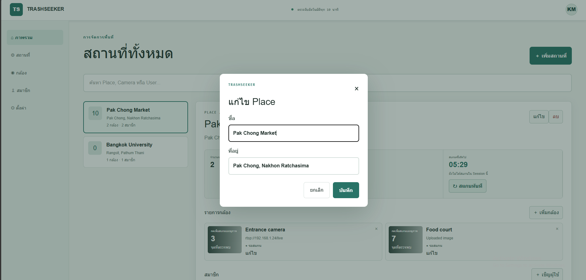
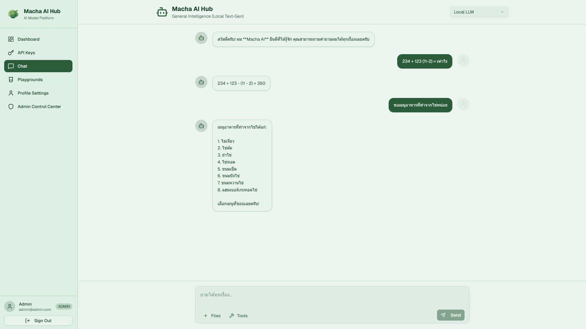
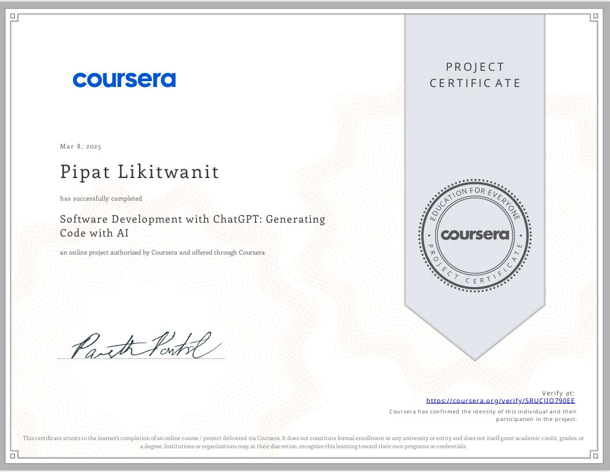
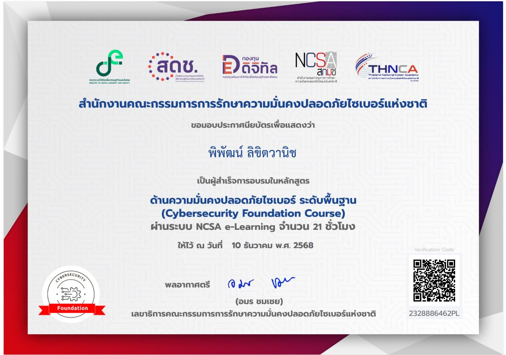
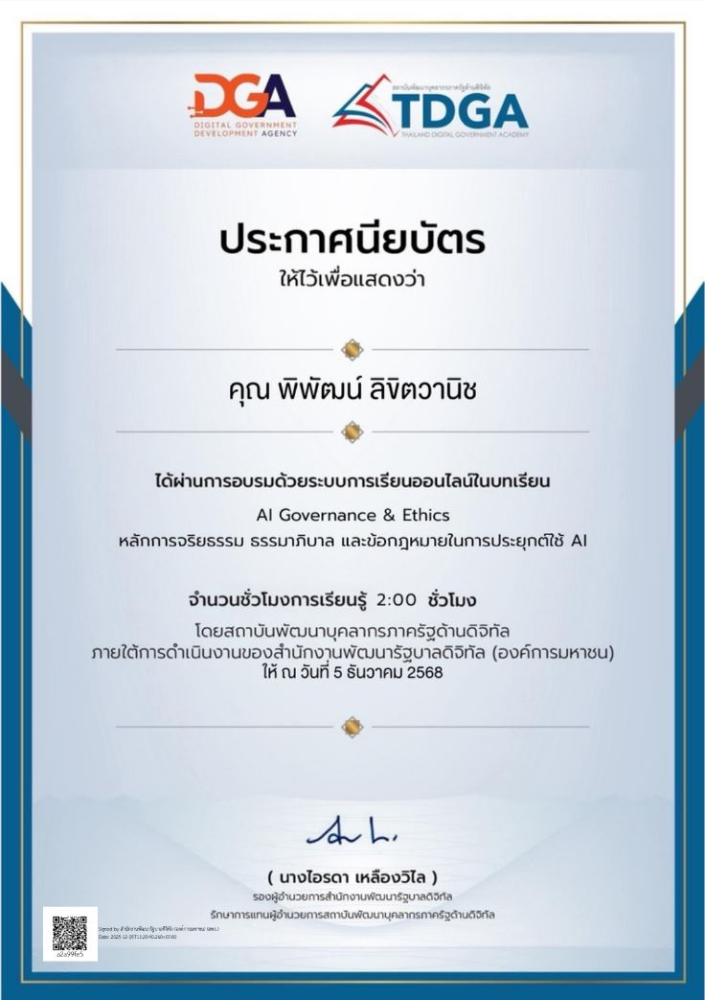
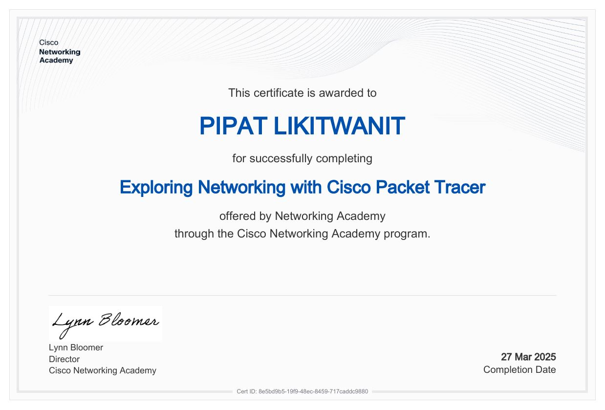
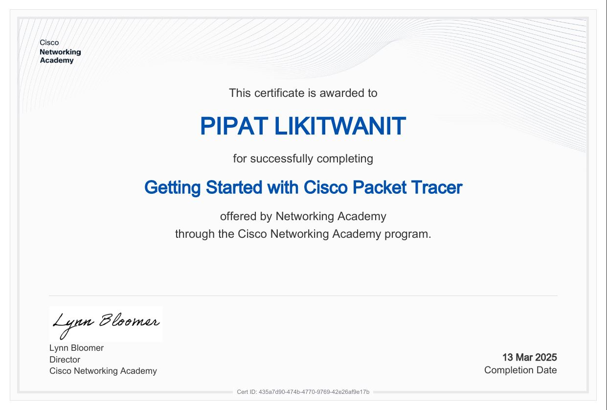

Hi, I'm Pipat Likitwanit
Aspiring Business Analyst
นักศึกษาวิทยาการคอมพิวเตอร์ มหาวิทยาลัยกรุงเทพ ที่สนใจมุ่งสู่สายงาน Business Analyst (BA) / IT BA มีจุดเด่นด้านความเข้าใจเทคโนโลยี (Technical Background) สามารถวิเคราะห์ความต้องการทางธุรกิจ (Requirement Gathering) ออกแบบ Workflow และเชื่อมโยงระหว่างทีม Business กับทีม Development ได้อย่างมีประสิทธิภาพ
About Me
พิพัฒน์ ลิขิตวานิช (อายุ 22 ปี)
กำลังศึกษาชั้นปีที่ 4 สาขาวิชาวิทยาการคอมพิวเตอร์ มหาวิทยาลัยกรุงเทพ มุ่งมั่นพัฒนาตนเองเพื่อเข้าสู่สายงาน Business Analyst (BA) ด้วยพื้นฐานด้านเทคโนโลยีและการพัฒนาซอฟต์แวร์ ทำให้สามารถเก็บความต้องการ (Requirements) แปลงโจทย์จากฝั่งธุรกิจเป็นข้อกำหนดทางเทคนิค (Functional Specifications) ออกแบบ Process Flow และสื่อสารกับทีม Developer ได้อย่างแม่นยำ
Education
Bangkok University
Computer Science
GPA
3.32
(Unofficial)Interests
Business Analysis &
System Design
Goal
IT Business Analyst /
Product Owner
BA & Technical Skills
Business & Systems Analysis
Data & Database Analysis
UI/UX & Prototyping
Technical Fundamentals
Tools & Collaboration
Featured Projects

TrashSeeker (Smart Waste Detection System)
วิเคราะห์ปัญหาการจัดการขยะในพื้นที่ และออกแบบโซลูชันระบบสแกนขยะอัจฉริยะผ่านกล้อง RTSP ร่วมกับ Computer Vision กำหนด Process Workflow ตั้งแต่การสตรีมภาพ การบริหารจัดการสถานที่ และสิทธิ์การใช้งานของผู้ใช้

Macha AI Hub (Private LLM Platform)
รวบรวมและวิเคราะห์ความต้องการระบบ AI สำหรับองค์กรที่เน้น ความเป็นส่วนตัวของข้อมูล (Data Privacy) ออกแบบ Workflow การใช้งานโมเดลภาษาไทย-อังกฤษ ระบบสิทธิ์ผู้ใช้ (RBAC) และโครงสร้างการจัดการ API Keys
My Certificates





Contact Me
Let's Connect & Work Together!
ยินดีพูดคุยและสอบถามเกี่ยวกับโอกาสในการฝึกงานตำแหน่ง Business Analyst / IT BA ได้ตลอดเวลาครับ